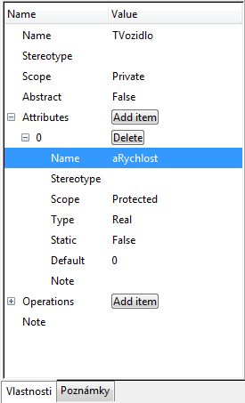

Editácia prvku
Mnohé prvky majú okrem svojho mena aj rôzne špecifické vlastnosti. (Napríklad triedy mávajú atribúty a metódy.)
Tieto vlastnosti sa zvyčajne tiež dajú upravovať pomocou záložky "Vlastnosti", alebo dvojklikom na daný prvok v diagrame.

